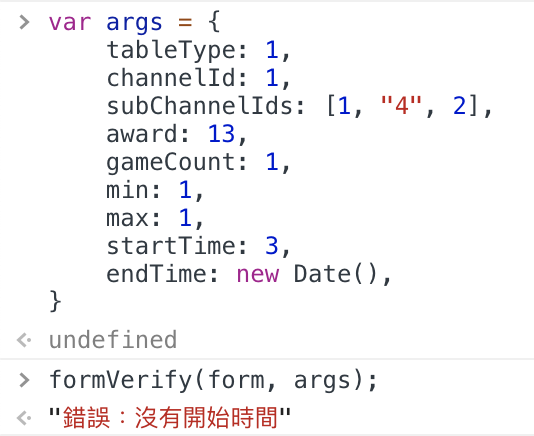

# [Javascript] [Tool] 一個自製的 arguments Verify 工具
# 由於 Js 是一個動態語言，因此如何判斷參數物件中有無預期的 key-value 一直是不可避免的工作…
Javascript 是一個非常靈活的動態語言，其在定義變數時不需定義型別、物件中的參數可以任意增減的特性一直是 javascript 工作者的基礎認知。
這些特性給工作者帶來了諸多方便，但也相對的伴隨著額外的負擔。
我們需要對傳入的物件參數依依檢查其 型別是否正確 、參數數值是否存在，這常常會讓 code 中充斥著大量的參數檢查相關的判斷式。
或是有些好一點的可能寫成這樣
然而缺點也如上所見：我們使用大量的 if 判斷式來對參數物件的內容進行檢查。
有沒有什麼方法可以解決這個狀況呢？
為此，我自己寫了一個小小的工具： formVerify
這個工具可以讓使用者以定義好的參數格式檢查參數物件是否符合規定，
我們做幾個例子來看看結果

由於我們在 form 檢查結構中定義 startTime 是一個 Date 物件 ，因此這邊抓出 startTime 不符合設定的物件屬性。
這邊注意的是 subChannelIds 中的 “4” 由於依然可以做為 number 進行運算，所以刻意不抓錯
這個例子中，由於我們在 gameCount 設定 nofalsy 因此 0 會不通過驗證。
以下這個例子則是，我們在 subChannelIds 處設定了 noEmpty_array 因此，此處的 array 為空不符合規定，故回傳 false 。
當所有的參數都符合規定時，則會回傳 true
# 結語
Javascript 的語言特性靈活，在很多時候是非常方便的。
關於 arguments 的驗證方式，有些人喜歡一開始的寫法，這也只是一種選擇，並沒有孰優孰劣的分別。只是個人比較喜歡將 code 集中管理，未來要進行修改也比較方便。